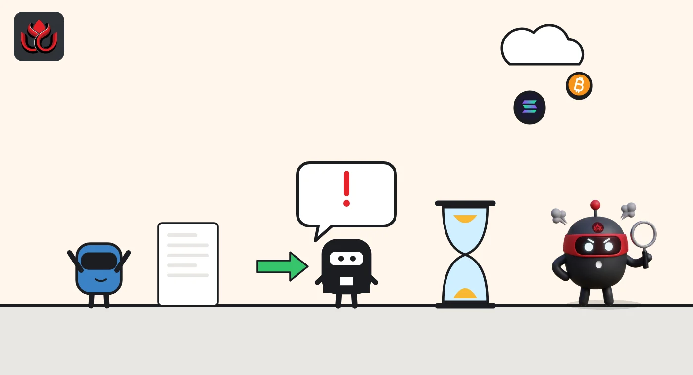
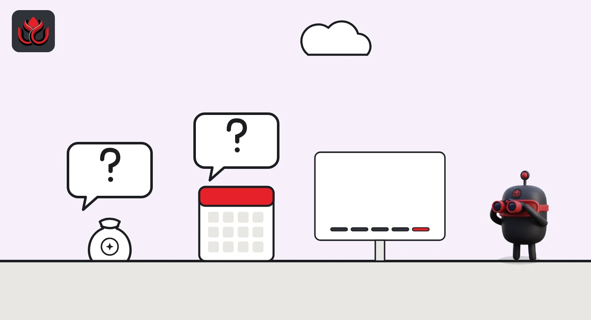

Polymarket has no POLY token. So why is it still pursuing a POLY trademark?
Polymarket's help center says it has announced no airdrop and no token launch, and that all rewards are paid in pUSD. Meanwhile a February application to trademark "POLY" for crypto token services is still alive, with a reply filed on November 2.
Key points
- Polymarket's help center, in an article dated June 24, 2026, says it "has not announced plans for any airdrop or token generation event."
- A "POLY" trademark application (serial 99637043), filed February 5, 2026, by Blockratize Inc., the Delaware company that does business as Polymarket, and covering cryptocurrency services, is live; a reply to the examiner's objections was filed on November 2.
- No POLY supply, allocation, snapshot or date exists. Today's rewards are cash-like: liquidity rewards, 3.25% holding rewards, maker rebates and a referral program.
 What DeepSea's data shows
What DeepSea's data shows
DeepSea has no official Polymarket token to track, because there is none. A search on DeepSea's projects page returned only one Polymarket-named token: "Polymarket PreStocks" (ticker POLYMARKET) on Solana, ranked 3,511th with a market cap of $659,700 and down 4.8% over seven days. Polymarket says it has no token, so this is not a POLY airdrop or a Polymarket-issued asset. Look-alike tickers are exactly what fake claim sites lean on.
Data: DeepSea (desea.io), checked November 2, 2026, 8:24 p.m. ET.
What Polymarket says
Polymarket is a crypto prediction market: users buy "Yes" or "No" shares on events, and each share pays $1 if it is right. The company's own answer, in a help center article dated June 24, 2026, is short: it has not announced any airdrop or token generation event, and all trading and liquidity rewards are paid in pUSD.
pUSD is Polymarket's collateral token, a standard ERC-20 token on Polygon backed by USDC. The article warns users to be wary of scams promising airdrops or giveaways, and says announcements will come only through polymarket.com, x.com/polymarket and its Discord.
So the answer to "has POLY launched?" is no. There is no token supply, no airdrop share, no snapshot, no eligibility rule and no date, and there is nothing to claim.
The trademark that keeps the question alive
The US Patent and Trademark Office record tells a different story about intent. Blockratize Inc. applied on February 5, 2026, to register the word mark "POLY" (serial number 99637043). The record lists Blockratize as a Delaware corporation. A 2022 CFTC order announcement names it as the company doing business as Polymarket.
The application covers three groups of goods and services. One is downloadable software for trading crypto assets, which the filing places "in the field of decentralized information markets." Another is cryptocurrency exchange services, including providing a digital currency for an online community. The third is a software platform for trading and clearing.
An examiner issued a non-final office action on June 5, 2026. That is a letter listing problems the applicant must fix or argue against before a mark can be approved. Blockratize got an extension on July 7 and filed its response on November 2, 2026. The file is now back with the examining attorney.
A trademark filing is not a token launch. Companies often file to protect a name they may use later, and an application says nothing about supply, timing or who would receive tokens.

How Polymarket rewards users today
Without a token, Polymarket markets itself with cash rewards, mostly for people who add liquidity:
- Liquidity rewards: daily payouts for limit orders placed close to the market's midpoint. A day pays only if earnings reach $1.
- Holding rewards: 3.25% a year on positions in selected long-dated markets, such as the 2028 US presidential race, funded by the Polymarket treasury. The page says a new reward and oracle-resolution system is planned for later this year.
- Maker rebates: a share of taker fees (paid by traders who fill resting orders), 20% or 25% depending on the category, paid daily in USDC to traders whose orders get filled.
- Referral program: users with at least $10,000 of lifetime volume earn 10% of net fees from direct referrals and 5% from indirect ones, for a referral's first 30 days or until that user reaches the Platinum fee tier, whichever comes first.
One line on the referral page stands out. It says referrers become "eligible for future Polymarket rewards," without saying what those rewards are.
Polymarket maker rebates: share of taker fees returned
%
What is not known
Everything an airdrop story normally needs is undisclosed: total POLY supply, the share for users, insider and investor shares, vesting, snapshot dates, eligibility rules, excluded regions, and how many wallets might qualify. There is no CoinGecko or CoinMarketCap listing for an official Polymarket token, because none exists.
There is also a small inconsistency in Polymarket's own pages. The token FAQ says all trading and liquidity rewards are paid in pUSD, while the maker rebates page says rebates are paid in USDC.

Timeline
Blockratize files the "POLY" trademark application
Holding rewards page dated, 3.25% annual rate
USPTO examiner issues a non-final office action
Help center: no airdrop or token event announced; referral program page dated
Extension to respond granted
Response to the office action filed; file returns to the examiner
Risks
- Fake claim sites. Polymarket says it has announced no airdrop, so any "POLY claim" or "POLY checker" today is not from Polymarket. Never connect a wallet from a link in a DM or a reply.
- Look-alike tokens. Tokens with Polymarket in the name trade on-chain without being Polymarket tokens.
- Farming with no promise. Trading to qualify for an airdrop that has not been announced means paying real fees for an uncertain reward.
LC Insight analysis
This section is our reading of the facts above, not a statement of fact.
- We think the trademark file is the most concrete signal there is. A company that had dropped the idea would be unlikely to keep pursuing a cryptocurrency mark nine months after filing, including a formal reply to the examiner. It still does not tell anyone when or whether POLY will exist.
- Polymarket's current model pays rewards in dollars, not points. That is the opposite of the usual playbook, where projects hand out points and let users guess their value. It keeps the books clean, but it also means past trading has no promised token value.
- The lesson for users is simple: until Polymarket publishes a token page on its own channels, every POLY claim is a phishing risk, and fees spent farming are a cost, not an investment.
What's next
- The USPTO examiner's next action on serial 99637043
- Any token page or announcement on polymarket.com or x.com/polymarket
- The new reward and oracle-resolution system mentioned on the holding rewards page
- What "future Polymarket rewards" in the referral terms turn out to mean
Frequently asked questions
Has Polymarket launched the POLY token?
No. Polymarket's help center says it has not announced any airdrop or token generation event.
Did Polymarket file a POLY trademark?
Blockratize Inc. applied for the "POLY" mark on February 5, 2026, covering crypto trading software and cryptocurrency services. It is still under examination.
How does Polymarket reward users now?
Through liquidity rewards, 3.25% holding rewards on selected markets, maker rebates and a referral program, paid in pUSD or USDC.
Is there a POLY snapshot or checker?
No snapshot, eligibility rule or checker has been announced. Sites claiming otherwise are not from Polymarket.
Disclaimer. This article is based on public information and the sources listed below as of the update time shown. It is for information only and is not investment, legal or tax advice. Figures may change as companies and authorities publish new data.
Sources
- Polymarket Help Center, Does Polymarket Have a Token? (June 24, 2026)
- USPTO TSDR, POLY trademark application, serial 99637043 (checked November 2, 2026)
- CFTC, Release 8478-22: order against Blockratize, Inc. d/b/a Polymarket (January 3, 2022)
- Polymarket Help Center, Liquidity Rewards (June 15, 2026)
- Polymarket Help Center, Holding Rewards (June 1, 2026)
- Polymarket Help Center, Maker Rebates Program (July 21, 2026)
- Polymarket Help Center, Referral Program (June 24, 2026)